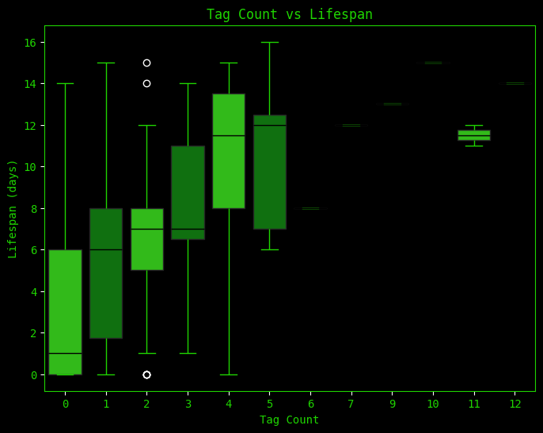
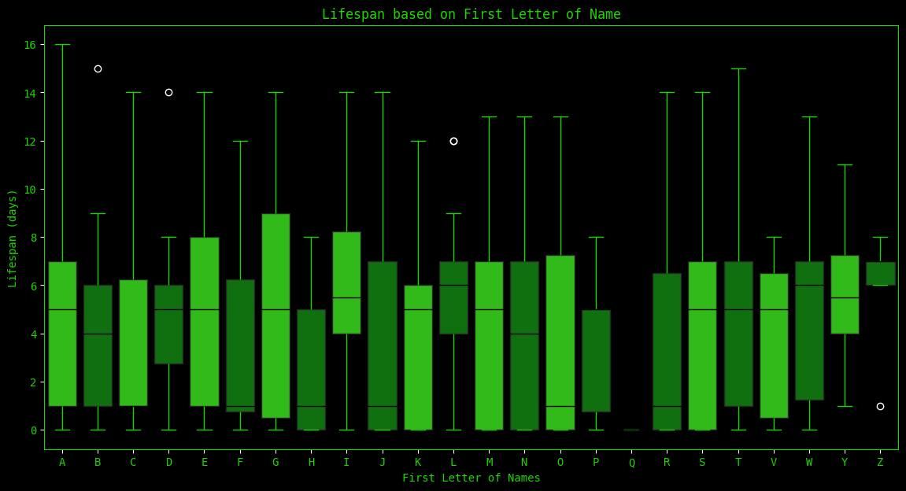
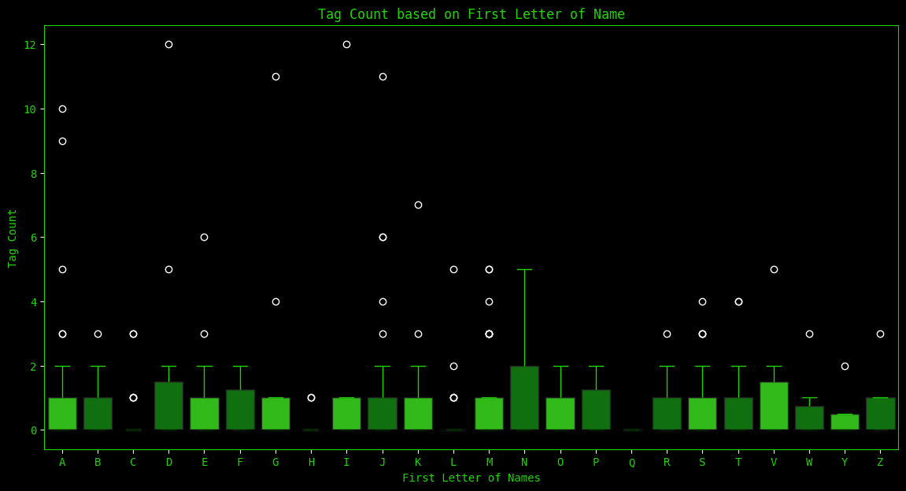

This dataset is from the Trinity Sticker Tag website. It includes the player's name, ID, lifespan in seconds, status, and tag count. The status will all be for agents marked as "tagged", because the agents marked "alive" have invalid lifespan values (they haven't been tagged yet).
Does a higher number of tags correlate to a longer lifespan? The most basic question based on Sticker Tag data.
How does the first letter of someone's name dictate their lifespan? Their tag count? A more fun visualization that could have little to no correlation.

From the graph above, you can see that as tag count increases, the average lifespan generally increases as well, suggesting a positive correlation. This makes sense, considering people need to survive a long amount of time in order to get a large amount of tags in the first place. However, it's important to note that those with around half as many tags (if not less) were able to achieve the same amount or more in terms of lifespan. So alas, the question has nuance that more data from more years could possibly answer.

From this second graph, you can see, as expected, that the first letter of someone's name and their lifespan does not have much correlation. However, it's still interesting to see that this year, people with the first letter in their name as L were able to have the highest average lifespan.

This last graph is similar to the previous one, but specifically for tag count instead of lifespan. Similarly, there should be little to no correlation. Yet it is intriguing that people whose names started with the letter N seem to have more of an affinity for tagging, given that their box plot's whisker is so high up compared to all the other plots. Note that the white dots are all outliers, further proving that it is by chance with all the dots scattered across the graph. This many outliers means that the data will probably never come to a general agreement. It shall vary year by year.
Overall, this Sticker Tag data analysis project has shown me a correlation between tag count and lifespan and essentially no correlation between the first letter of someone's name and their lifespan/tag count (as expected).